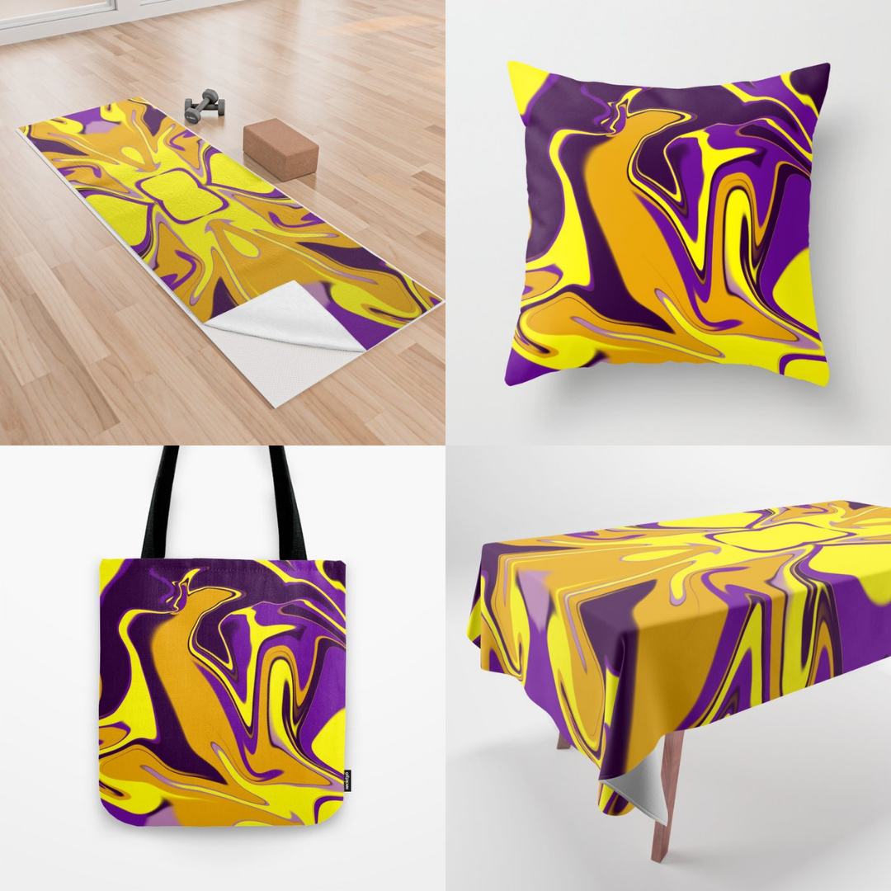
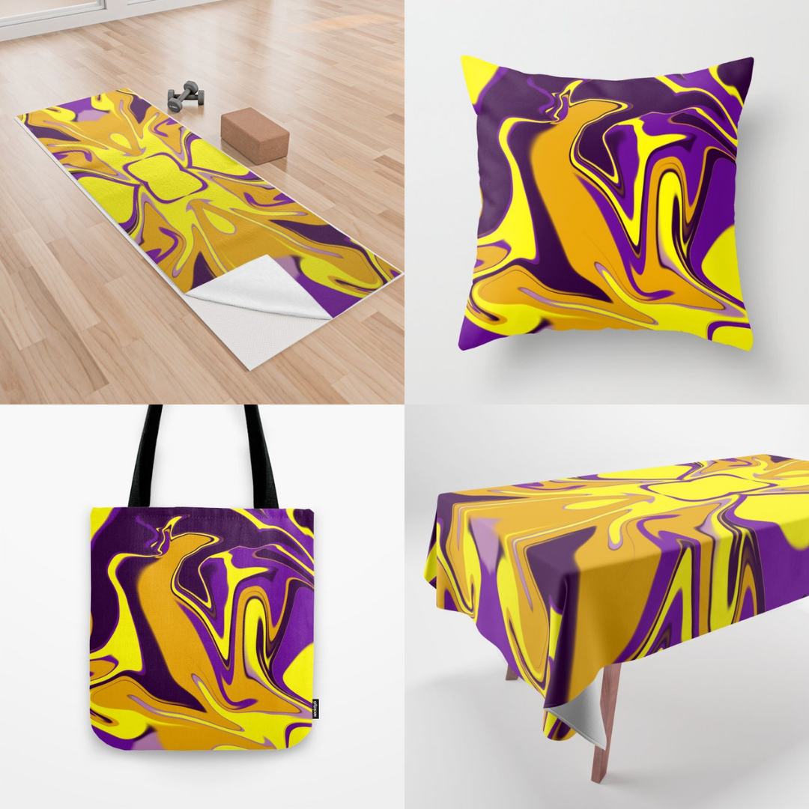

hi, I'm kalipinna and this is where you can find my designs, discount codes, and how to get more personalized products!
If you want to know more about me or about my promoting schedule for mutual followers on socials or society6,
it's all at the bottom of this page. And if you need to ask a question go ahead, I'm here to help!
MY SHOPS
Redbubble
(most famous, can make patterns easily, lots of products, will also have illustrations and text-designs).Society6
(This website doesn't only offer apparel and home decor but furniture, outdoor and kitchen accessories and so much more!)Teespring
(currently going through changes, I'm archiving most of my transparent designs and instead only activating extra special products, specifically the all-over ones, for my major collections, like my abstract art, lgbt puzzles and patterns).Threadless
(I'll donate part of my earnings to charities among the ones they offer, will add designs under request as well as activating special products that are hard to find for my major collections, similarly to teespring).Redbubble
You can watch this video of my shop recorded today (20th november 2021), and you'll see the default view of many different products, how some already have copies in different colors or with patterns made - and how you can filter results by the product you look for, or search for more products after you click on a design.
Point is: more than 80 product for each design, folders to find collections more easily, and more!
Long story short: send me a message here, send me a mail at kalipinna@hotmail.com or pick a social if:
- you see a design you like but it's missing on the product you want, for example "hi could you enable X design on the backpack?"
- you want a different background color, like "hi, can I have x design on a red background?"
- you want to buy a design from another shop because you already have an account there or for any other reason, like "hi, can I have X design copied from Redbubble to Threadless?"
- you want some small modification like "hi, x design is about this lgbt flag, could you make a flag about this other orientation?" or "could you make this design a lot smaller on the middle of this dress/a lot bigger like covering almost the whole product?"
- you have a more specific request related to personalization like "can you add my name/my zodiac sign/my year?". In this case you'll likely be the only buyer so please only ask if you are sure you really like the design and just need that little change (a long back and forth changing everything about it will result in a higher fee).
I may have questions but if it's doable, and that will depend on the website, I will start working on it right away or let you know it's not possible. You are not required to buy anything after!
Warning: as I've written before, things are changing. Sadly I can't offer the option of checking my transparent designs on teespring to see what they look like on different background colors, so that you can ask for one you like on my other shops, because it's become clear that the searchbar function doesn't work the way it should and it would be impossible to find a specific design among hundreds. That's why I'm drastically reducing the number of products and changing everything.

Society6
I've joined Society6 and I have so many different collections it's quicker for you to just check the shop than to read about them:.jpg)
.jpg)
.jpg)
.jpg)

.jpg)
.jpg)
.jpg)
.jpg)

 

Teespring
Right now on Teespring, as I've said before I'm working on adding less common products, for example all-over hoodies, swimsuits, crop top and sport bras, and I'll take down most of my transparent ones with some exceptions (especially when it comes to old designs' special products). Of course I will bring back or enable for the very first time any design that it's requested too. Examples of what's already there:.png)
.png)
.png)
.png)
.png)
.png)
.png)
.png)

Threadless
I already have some designs in my Threadless shop, which I intend to keep, but just like on Teespring from now on I will only activate rare products for my major collections like shoes, weekend bags and a few more that go well with them. As always I will also add anything that is requested.5% of my earnings will be donated to a charity written on the product page, which I'm not picking based on the design theme (I'm just trying to choose each of them at least once). The "new" collections have already been created and will keep being uploaded as I go on. Examples:
.png)
.png)
.png)
.png)
.png)
discount codes and sales right now:
Teespring:
KALIGIFT10 FOR A 10% DISCOUNT UNTIL DEC 26TH, offered by me!Society6:
Big holidays sales, unknown for how long!Who is Kalipinna/Ele?
I agonized over writing an "about me" section because I knew I'd write way too much, and wondered what I could write that isn't a cliché in the first place. Well, the answer to that is nothing, I'm full of cliches, and I will definitely use too many words, but here I am: I'm chronically ill, which is the first thing I usually choose to use to describe me simply because it influences every choice I make, and because my entire personality is defined by it, given how it shaped my past and my way to experience the world. That makes me appreciate what I can enjoy all that much more, and it's probably among the reasons why When I like something I hyperxate on it and can spend ten hours straight on my computer doing it. I never really stop loving things even when I move on to a new passion, always ready for a jump back.

What do I do at my laptop? For starters, bingewatch whatever tvshow I enjoy, and probably end up writing about it (I also roleplayed for years and occasionally still do, as in interactive writing in third person), I love writing in general, reading, and making blog themes, usually for tumblr (the step from writing on tumblr to becoming curious about html and how to create blogs was small for me), and as it turns out I love playing around with photoshop and making designs as well as editing photos, usually while listening to all sorts of music or white noise. Each passion has led to a new one and that makes me very lucky, and I don't care if it's nothing incredibly adventurous or intellectual: I am what I am.
I can't choose a favorite song, a favorite color, a favorite anything, because I love too many and too intensely, and that's another reason why if you check my pages you'll see I can't settle on one type of design, one art style, but I go where my heart leads, and it's inevitably loud and colorful 90% of the time.
I'm also working on my mental and physical health and, as strange as it may sound, I've been focusing more on instagram lately as an extra step in the right direction. I make sure I'm only exposed to things that have a positive effect on me,
not to mention that I share about my IBS, my struggles, sort of like a video-journal, and make a point of showing myself without embellishments and filters which helps my confidence, if only because I hope I can reach people like me and encourage
them the same way seeing people do the same made me feel better about myself. So follow me there for both designs and ridiculousness!
Last, some little facts that should have probably been mentioned first: I go by Kalipinna/Ele and
neither of them have anything to do with my real name but may as well be, because I spent many many years being called Kali, Pinna and Ele by my friends (especially on the internet, given that I'm a late 80s kid who was taught never to use
my real name on the internet) and they stuck. I adore cats and dogs equally despite my choice of logo. I'm Italian. I have no diagnosis yet after 14 years of pain but I haven't given up. Despite my horrible IBS I still adore food. I'm also
still listening to early 2000s songs. Anything can make me cry including ads.
"My "schedule"
Keeping in mind that I'm chronically ill and therefore this is not set in stone because my health and recovery take priority:
- Twice a week, normally on Monday and Thursday, I post my designs on my pod websites. This is the official schedule, but I usually fail at keeping it and end up posting more often than I should.
- Twice a week, normally on Tuesday and Friday, I'll promote designs on instagram and facebook.
- Twice a week, days not determined yet, I will make a point of checking who follows me on society6 and follow back, then like all new designs I see to give the artists visibility & I will scroll down IG and like posts for the same reason, especially when it comes to Redbubble designers because liking their designs on RB doesn't have an effect. I will give priority to those who do the same.
- Daily, whenever I'll have a full 15 minutes, I'll take fifteen minutes to find new people to follow
and in the meanwhile... pick your colors! And get your Redbubble dress, Threadless weekend bag, or Teespring yoga mat!